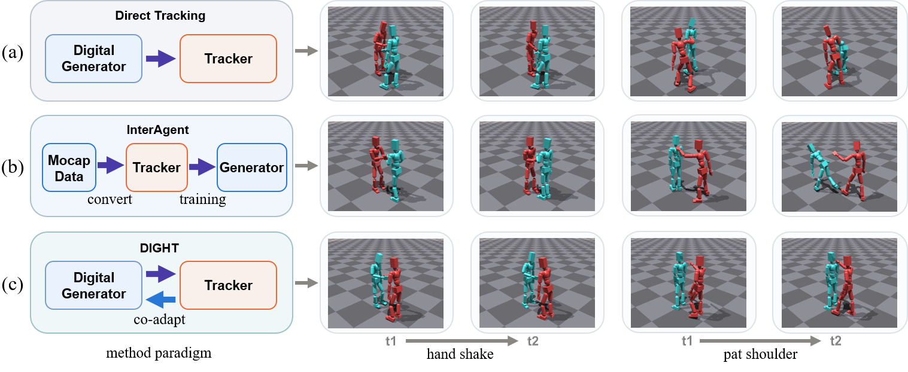
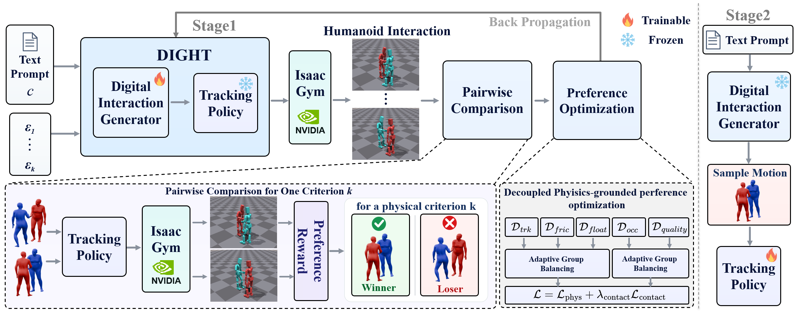

Abstract
Recent methods have made promising progress in generating interactions between two humanoids, largely relying on physics-based tracking policies to convert digital reference motions into executable trajectories. However, limited tracking capabilities restrict the range of reference motions that can be successfully executed, reducing data utilization. Moreover, even successful tracking does not guarantee physically plausible responses or faithful realization of the intended interactions. In this paper, we introduce DIGHT, a co-adaptive framework that couples a Digital human Interaction Generator with a Humanoid Tracking policy. Our DIGHT first executes multiple text-conditioned interaction candidates in simulation using a fixed tracker. It then constructs physics-grounded preferences from the resulting rollouts, covering both general executability and interaction fidelity. Rather than collapsing these signals into a single scalar reward for candidate ranking, we align the pretrained generator using physics-decoupled diffusion direct preference optimization (DPO), preserving criterion-specific supervision without differentiating through the simulator. To improve executability, preference pairs are derived from tracking error, friction, and floating. Additionally, to improve interaction fidelity, we propose to incorporate force feedback from the simulator as a measure of contact fidelity and construct preferences over contact occurrence, location, duration, and force magnitude. The aligned generator then supplies reference motions for fine-tuning the tracker, improving compatibility between generation and physical execution. Extensive experiments demonstrate that our approach not only improves the physical plausibility of generated motions but also enables more reliable and faithful humanoid interactions in simulation.
Overview

Visualizations
DIGHT vs. InterGen
The first one supports themselves with hand on the ground, while the second one grasps the first one's left hand and help themselves up to a standing position.
One person approaches another and taps his right shoulder using the left hand.
One person walks to the front of the other and extends his left hand. The other person takes a step forward and extends his left hand to shake hands.
Both the two synchronize their kick heights during the training.
Multi-humanoid
Interactions involving multiple humanoid characters.
Three Humanoids: In an intense boxing match, two people are continuously punching while the other is defending and counterattacking.
Four Humanoids: Four people stand in a circle and play a game of rock-paper-scissors together.
Long-horizon
Longer interaction sequences composed of multiple instructions.
Bow → Boxing → Kick → Bow
Approach each other → Argue → Push and shove each other
High-dynamic
Fast, high-energy interaction motion.
Kick
Continuous-contact Boxing
A sustained close-contact boxing interaction.